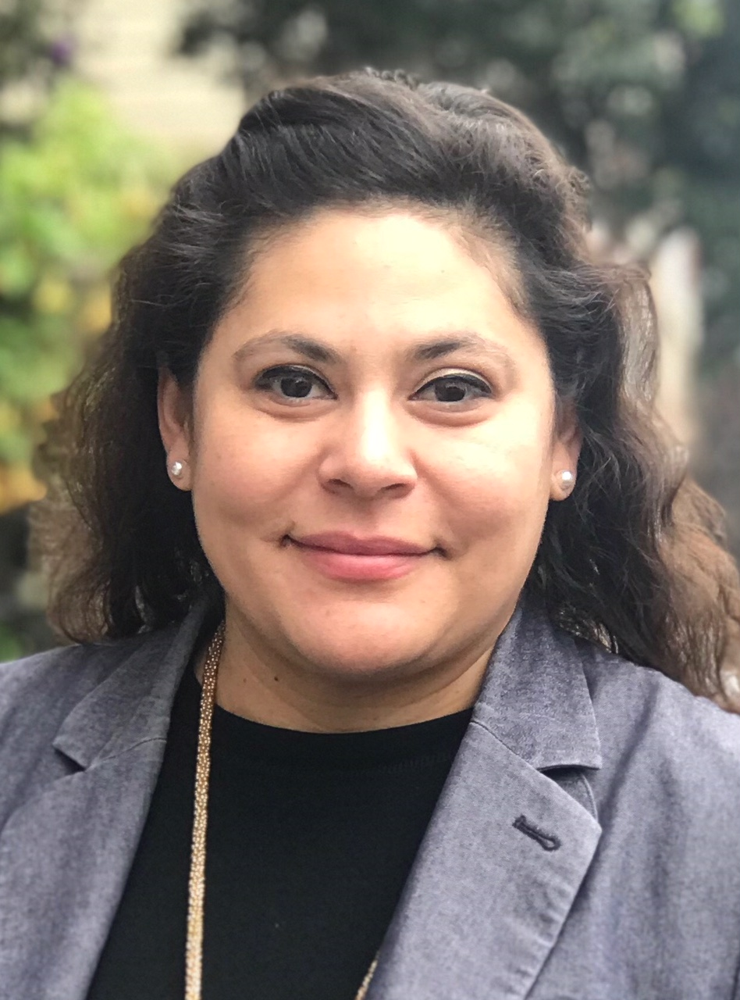

About Gail
In July 2017 Gail was admitted to the UCBerkeley Extension Coding Bootcamp. For 24 weeks Gail will learn about the tools, practice the skills and build a portfolio of front-end and back-end software development. The full stack knowledge and experience will allow Gail to grow in her current industry and/or expand into other industries. She looks forward to the opportunities!
Gail is a beloved bartender in San Francisco. She has been at the forefront of many cocktail changing movements/revolutions working to provide better quality products, perpetuating knowledge and creating a welcome environment for all.
After living in various places domestically and internationally, Gail has made San Francisco her home. Scuba diving is one of her favorite hobbies and she has attained the PADI Rescue Diver level. Also, Gail enjoys practicing yoga, riding her bicycle, dabbling in languages and spending time ruminating. Because of her diverse background, Gail is open-minded and happy to meet new people.